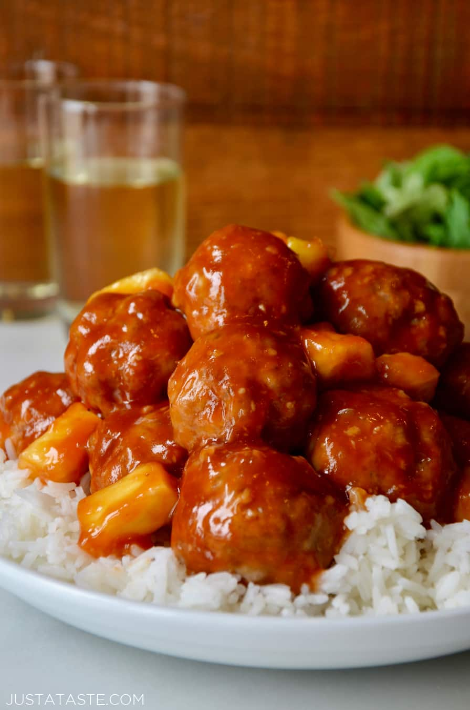

Sweet and Sour Meatballs

Description
Perfect over a nice bed of hot rice
Ingredients
- 28 oz. Meatballs
- 1 cup Brown Sugar
- 2 tbsp. Soy Sauce
- 3 tbsp. Cornstarch
- 2/3 cups Vinegar
- 20 oz. Can Pineapple Chunks
- Bag of frozen carrots (optional)
Cooking Steps
- In a bowl, mix
- Brown Sugar
- Vinegar
- Soy Sauce
- Cornstarch
- Juice from Pineapple can
- Add meatballs to crock-pot
- Cover with liquid mixture
- Cover with pineapple chunks
- Cover with frozen carrots
- Cook on low for 2 hours
- Switch to high for 1 hour
- Enjoy
Back to Recipe List